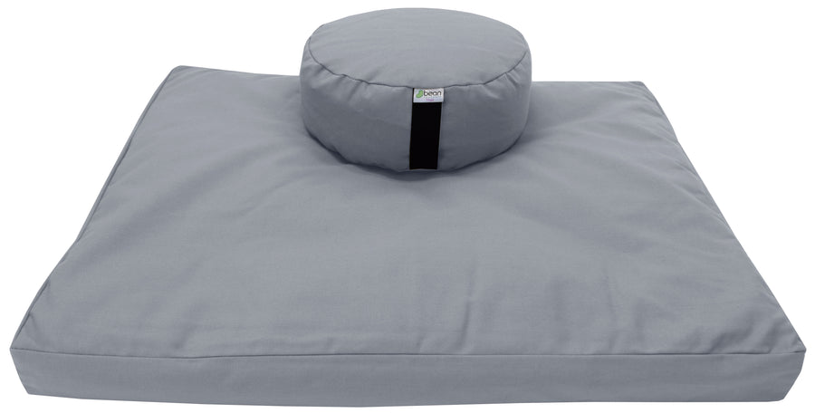
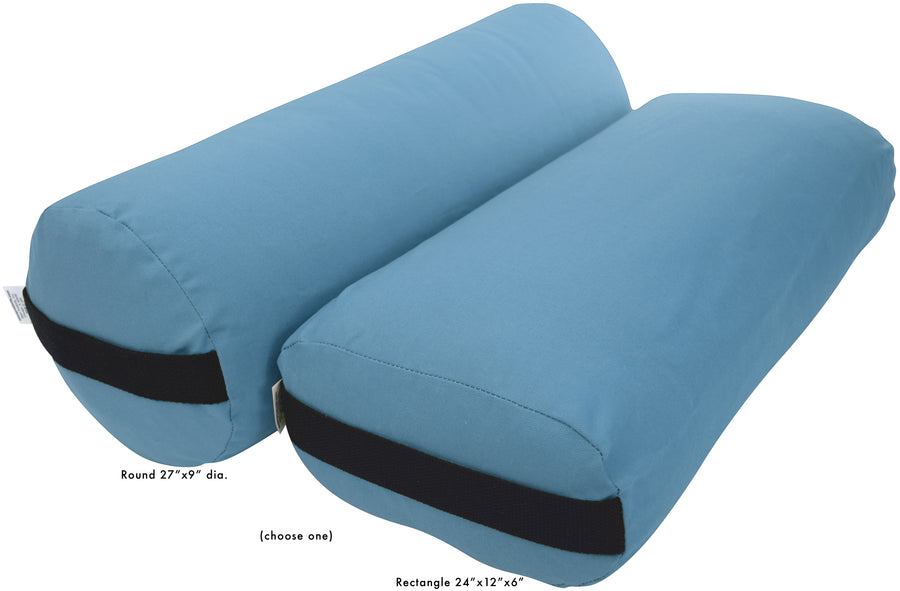
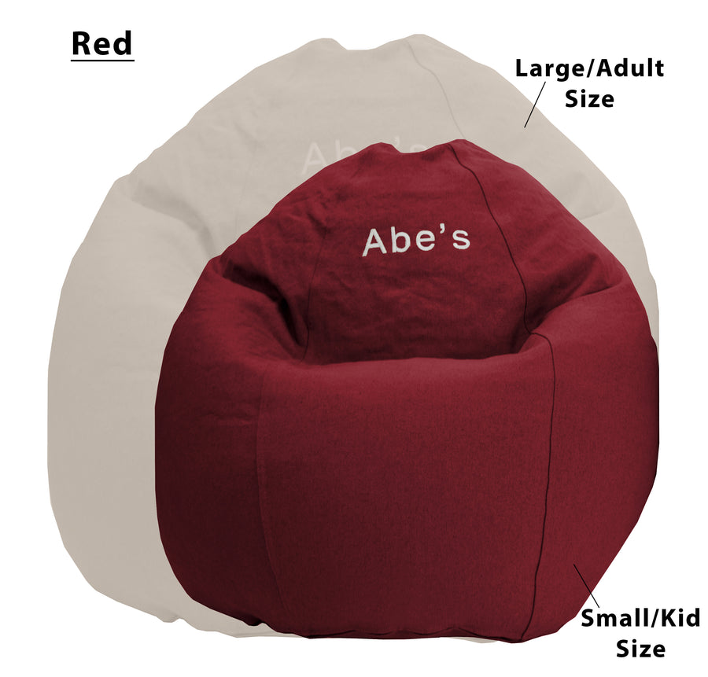

Cotton Zafu and Zabuton Meditation Set
Cotton set pairing a zafu seat cushion with a zabuton floor cushion.
View official product ↗STUDIO • HOME • CHICAGO
Thoughtful equipment for seated practice, restorative sessions and quieter spaces. Start with a studio list that you can actually review.

Three real references. Confirm options, prices and availability at the official store.
Cotton set pairing a zafu seat cushion with a zabuton floor cushion.
View official product ↗
Cotton bolster offered in round, rectangular and pranayama formats.
View official product ↗
Organic-cotton adult lounger with a removable cover and fill choices.
View official product ↗YOUR LOCAL SHORTLIST
Your selection stays in this browser. It does not reserve products or submit orders.
Bean Products describes its goods as handmade in Chicago since 1987.
The official store includes meditation sets, yoga bolsters, loungers and fill materials.
Wholesale, custom-order and private-label enquiry routes are published on the website.